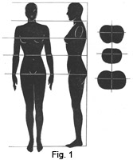
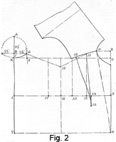
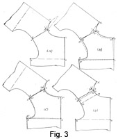
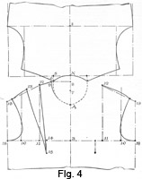

Early 1940's—Ladies' Garment Cutting and Making
by
F. R. Morris
Chapter I—Basis of the System for Coat Construction
WE must first realize that pattern production in its entirety cannot be based upon a mathematical formula. Calculations and measurements derived from the breast size will provide a working basis for obtaining the general outline of the pattern in accordance with the figure shape, but only practical knowledge and experience of modelling a garment to the figure give a scientific method of approach for the attainment of perfection of fitting qualities.
The impracticability of attempting to define a section of the figure by fractional calculations of the breast size until we have proved the principles involved to be scientifically correct applies with equal force to the principles that govern the fitting qualities of a garment.
The question of balance of a garment is distinct from that of fit. Balance implies the relation of the garment in harmony with the form of the wearer. It is the principle of construction that decides whether a garment is suited to the figure form and attitude. For obvious reasons a garment perfectly balanced in relation to a proportionate figure would be hopelessly out of balance and harmony when placed upon a figure of stooping or erect attitude.
We are able to decide the balance and calculate the sectional values of heights and widths in terms of geometry in relation to an accepted standard of proportion, after which experience and reasoning ability are the governors of whether the operator of a system is successful or the reverse. There is no royal road to success in garment cutting, yet many students expect to learn their job and earn a good salary as qualified cutters after a period of three or six months at a cutting or technical school. Knowledge of the constructional points of a cutting system is of small use, for it is only the foundation of knowledge. Knowledge of how to lay a foundation is of no use to a builder if he cannot continue with the work and erect his house on top!
The ability to adapt our system to meet the fitting demands of varying figures cannot be taught, yet it may be attained by an intelligent use of a knowledge of form growth and practical modelling experience. The author mentions modelling experience because the scientific school of cutters deprecate the method; but in his opinion a student should learn to model before attempting to assimilate a flat-cutting system, for modelling teaches us why we cut as we do. It is much more practical from a student's point of view to see clearly what he is aiming at and also what is necessary in order to obtain a good-fitting garment than to spend hours juggling with fractions of an inch and a mass of, to him, often unintelligible lines.
There are cutting systems that purport to locate every fitting and constructional point by direct scientific calculations derived from the breast measure, treating the figure as of regular and static proportions and applying definite laws of construction thereto. But the human frame is not of rigid and precise dimensions in regularity of shape; instead it is irregular, though possessing a relative regularity in each section. Geometry cannot be applied to the human figure in all its aspects, but there are sections of precise definitions and dimensions of proportion in relation to the breast girth and height, and when a cutting system is being evolved it must be scientific only to the degree that definite scientific calculations are applicable to the human figure.
Constructional Basis for the Location of the System Points
In the production of patterns for coats, two methods of calculating the dimensions of the various sections of the pattern are advocated and practised by cutters.
One method is that of deductional calculations based upon divisions of the bust girth in conjunction with the actual height of the figure.
The second method is that of taking "short direct" measurement from one section of the figure to another, with the intention of definitely fixing the dimensions of the pattern by evidence of the inch-tape.
Each of these two methods has its advocates and exponents and neither method is perfect. As the author has previously mentioned, only practical experience and intelligent reasoning ability will decide whether we become successful cutters or not.
There are four sections of height and width for which provision must be made. They are—
(1) THE BACK DEPTH, usually termed "the depth of scye," though this expression is rather erroneous as the scye level is not in a constant position, being governed by style in its location.
(2) THE FRONT DEPTH OR BALANCE. This factor relates more to balance than actual depth. While the depth factor for a normal given figure may be arrived at by deductional calculations or by direct measurements of the figure, the balance of the coat for such a figure's attitude or stance may frequently contradict the predetermined depth factor and necessitate an increase or decrease of front and back depths. For example, a figure of stooping attitude requires relatively more back depth and less front depth in comparison with a figure of normal build to obtain a correctly balanced garment. The opposite applies for an erect figure. Therefore, the front depth as well as the back depth is governed by figure stance and balance adjustment. The provision of contour shape and length in relation to the form of the section to be covered is also a function of the front depth factor.
(3) THE FRONT OF SCYE OR ACROSS-CHEST WIDTH. This relates to the location of the armhole or scye in its relation to the width of back and front sections. Some systems locate the "front of scye" by applying a measure from the centre back forward to a point in advance of the arm socket and allowing a quantity for ease of movement in the draft. Other systems use the "across-chest" measure, based on a direct measure taken from the front of the armhole at one side to the other, or, alternatively, a calculation based upon a division of the breast measurement.
(4) THE SHOULDER CAPACITY OR THE OVER-SHOULDER MEASURE. This factor decides the requisite amount of material required to cover the size and shape of the shoulders.
The method of estimating constructional points by calculations based upon divisional fractions of the breast girth and height factor is adopted by experienced craftsmen, but in the hands of students or inexperienced operators it often fails to give them the perfection they expect; so many cutters prefer to use the "direct measure system," a method which purports to define constructional points by short direct measures taken on the figure. They are called "short" measures because the body is divided into four smaller or shorter sections of the whole. They are called "direct measures" because the four sections are assumed to be defined by these "short" measures taken direct on the body instead of by divisional calculations. The measures thus obtained are then applied to the pattern draft to locate the constructional points directly.
This method, however, is fraught with inaccuracies and places too much responsibility on the necessity for correct measurements. The tape-measure in the hands of any but experienced craftsmen can be very unreliable when registering "short direct" measures. It must be plainly understood that, when measuring from one section to another on the figure, a measure of contour is registered, which has to be applied to a flat plane on the pattern draft. Obviously if we measure over a curve and apply the distance on our draft in a straight line, we are acting unscientifically and without logic. Yet the operation of taking and applying direct measures is identical with this. Customers, too, are notoriously in the habit of altering their natural attitude when the tape is being passed over them, with the result that our direct measures of the figure, in which we place so much faith, may be just the record of an unnatural position.
Yet cutters place abject faith in the infallibility of direct measures obtained in this way, after having tried the "divisional system" and found it wanting in respect of giving automatic adjustment of balance for varying figures. The direct-measure system professes to give this automatic adjustment for cutters to work by and may be compared to a safeguard against lack of experience and reasoning ability.
It is not the fault of the divisional system if, in the hands of some cutters, it fails to give satisfaction. Instead, condemn the reasoning power which fails to realize that human beings are not all of perfect proportions and consequently require adjustment of system points and balance in accordance with the variation from normal build.
For obvious reasons a garment cut to fit a figure of 5 feet in height would prove inadequate to cover the increased depth or height factor of a figure 5 feet 10 inches. There would be an insufficiency of shoulder depth and covering capacity in proportion to the increase in height even though the breast measured the same. Inexperienced cutters using the divisional system give the same depth allowances for the tall as for the normal figure. A depth factor based only on the breast girth cannot obviate this; here is where a knowledge of figure construction and form growth indicates why an increase of depth is necessary.
With the divisional system we cannot run before we can walk. A complete mastery of the scientific principles underlying this method is necessary, for to expect a system to be self-adjusting without any brainwork on the part of the cutter is foolish.
It is the knowledge of the shortcomings of the system used, whether divisional or direct measure, that places the intelligent craftsman above his fellow who is but a blind imitator of direct measurements or divisional aliquot parts. Experience guides the user of a divisional system past the snares and pitfalls in cutting, while direct measurements, by reason of their very rigidity, more than often fail us if we let the inch-tape think for us, instead of reasoning out whether the measurements as obtained are correct for the figure or not.
Direct measures may be put down as unreliable in general, though an experienced cutter using a divisional system may take them as a counter to his own calculations. For gentlemen's garments direct measurements are reliable on the whole, but they are more easily obtained than in the case of ladies' garments.
The Divisional System
The divisional system is the basis of the foundation drafts following, and all constructional points are located by deductional calculations from the breast girth and height factor. To use the system scientifically and rationally, it is necessary to take as a basis a standard approximating to the conception of a normal proportionate figure. Only by comparison with such a standard can we estimate for varying proportions and figure attitudes.
The figure that approximates nearest to the conception of normal proportions is that of a woman of 34 inches breast girth and 5 feet in height measured without shoes. With this figure, the front and back depth factors show their relative differences to a proportionate degree, and the height is an average standard in relation to the breast measurement.
Referring to the scale of proportionate measures, we find the chest size (measured above the bust prominence) is 32 inches.
Waist Measure equals 25 inches.
Hip Measure equals 38 inches—a proportionate increase of 4 inches over the bust size.
Back Width equals 13 inches. This measure is one that relates to style rather than a quantity which influences and bears upon the system.
The Natural Waist Length from the nape of neck to waist equals 15 inches.
The Front Waist Measure from the nape of neck to the waist line at the front equals 20 inches. This is a check measure to determine the variation of the front depth for figure attitudes other than normal.
The Back Depth or Depth of Scye
The back depth or depth of scye quantity is determined by two factors, namely, the height of the figure and the bust girth. The important factor is the height, for, providing we can ascertain the back depth quantity for the proportionate height, calculations can be made for increases or decreases of stature.
The author calculates the depth of scye from a division of the total height. It is an accepted theory of scientists and artists that the height of the head of a figure divides into the total height eight times, thereby dividing the figure into eight equal sections. This theory is centuries old, dating from Egyptian times, and is one of the few geometrical principles of measuring the human frame that is directly applicable to scientific pattern construction. Fig. i illustrates a figure measured on the basis of the eight-heads theory. For our purpose, the second and third divisions are considered, namely, from the nape of the neck to the base of the arm, and from this section to the waist level.
Now on examination of the figures, the line of measurement passes inside the form and is not a value of the contour shape of the centre back. This is why the system is based on a normal 34-inch bust girth, for in this size the contour increase over the direct division of the height is negligible. To be logical a slight value should be given, but in practice it has been found that one-eighth of the total height for the depth of scye is sufficient.
The depth of scye or back depth factor from the nape of the neck to the base of the armpit is equal to one-eighth of the total height for a proportionate 34-inch bust figure 5 feet in height.
Therefore—
The value of the depth of scye
= 1/8 of height 5 feet (60 inches) = 7½ inches.
The natural waist length being equal to a value of two heads of the actual height, from this the measure of 15 inches is computed.
Applying this calculation to larger sizes, we have to take into account the proportionate increase in height, so, when dealing with a woman with a 42-inch bust, the proportionate height would be 5 feet 4 inches.
Therefore, 1/8 of 5 feet 4 inches (64 inches) = 8 inches.
As stated previously, the value of the back contour shape is negligible for the base model of a 34-inch bust, but it must be obvious from Fig. 1 that the greater the breast girth, the greater must be the distance of the perpendicular line taken through the figure, from the centre of the back; so from practical experience, and taking into account the fact that one-eighth of the height is a linear measure possessing no contour value, provision must be made for the increasing contour of the back.
Fig. 1—A Figure Measured on the Basis of the Eight-Heads Theory
The addition for the increase of back depth over one-eighth of the total height for bust sizes over 34 inches is calculated as 1/8 inch for every 2-inch increase of bust size.
Therefore 1/8 of 5 feet 4 inches = 8 inches, plus 1/8 inch increase for every two-inch increase in bust size from 34 to 42 inches = ½ in. This gives us 8½ inches from the nape of neck to the depth of scye.
Similarly, taking into account the increasing proportionate heights in conjunction with the increase of breast size, the depth of scye factors may be computed for all bust sizes.
We have only dealt with figures of proportionate height, but for figures of taller or shorter stature, the corresponding increase or decrease of scye depth may be easily calculated, as the depth factor is computed as one-eighth of the height. So for every inch increase or decrease in the total height, irrespective of the actual breast size, the depth of scye factor must correspondingly increase or decrease 1/8 inch for every inch of variation.
For example, a 34-inch bust figure with an increase of height to 5 feet 8 inches would require an addition of 1/8 inch for every inch of increase in height from the normal stature. Therefore—
- Normal height for 34 inch bust = 60 inches.
- Increase of height = 8 inches.
- Increase of depth of scye, one-eighth of 8 inches = 1 inch.
Add this inch to the normal scye depth of 7½ inches and we have the required depth for an increase of height to 5 feet 8 inches.
Another example is the type of figure of very short and thick stature, having a 46-inch bust yet measuring only 4 feet 11 inches in height. Calculating on the above method—
- Normal height for 46-inch bust = 66 inches.
- Normal depth of the scye, one-eighth of 66 inches = 8¼ inches.
- Normal depth of the scye plus ¾ inch of contour value = 9 inches.
- Decrease in height = 7 inches.
- Decrease of depth of scye, one-eighth of 7 inches = 7/8 inch.
From this calculation the depth of scye for a woman having a 46-inch bust and measuring 4 feet 11 inches in height is 9 inches less 7/8 inch = 8 1/8 inches.
It has been shown how to compute the depth of scye factor for normal and abnormal variations of breast and height quantities from calculations based on the normal height, but for simplicity in practice, however, it is found to be more satisfactory to estimate this quantity by a division of the "working scale" based upon the bust girth. This division of the scale must necessarily provide the same increment of scye depth for a proportionate figure as the calculation based upon the height of the figure and the bust size.
The Working Scale
The working scale is a means of comparison whereby we are able to compute the relative values of the depth and width factors in their relation to the bust girth. Though, in the first instance, the height and width factors are calculated from the height of the figure, for practicability it is advisable to have a standard with which the various factors may be relatively compared. Therefore, we must evolve a scale that agrees with the proportionate increase or decrease of height and width quantities from the normal 36-inch bust size.
For bust sizes of 36 inches and under, the working scale is calculated as half the bust measure. This is workable down to a 30-inch bust, but, under this size for juveniles and children, a new scale must be devised to allow for the extra ease of fitting qualities essential to this class of trade.
The computation of the working scale as half the bust size is true only for the sizes mentioned, and for busts of more than 36 inches an adjustment must be effected. The relative proportions of the figures of more than 36-inch bust girth do not increase regularly in relation to the increase in bust size, but, instead, when we come to a woman of, for example, 48-inch bust or over, the height quantity and back depth factor become constant and show no proportionate regular increase to compensate for the irregular figure development at that size.
A 48-inch bust figure would require a garment cut relatively larger in shoulder size in comparison with 36-inch bust proportions, and a disproportionate increase of front length from the nape of the neck over the shoulder to the bust point to allow for the increased development of bust prominence. At the back, the scye depth would in all probability be decreased, but this type of figure is invariably of rather less than average height, thick through the shoulders and a trifle short in the neck.
Therefore, to cope with this general evidence of disproportion in the larger sizes than the 36-inch breast, we must devise a scale which does not increase proportionately, but with a decreasing ratio between the fundamental constructional factors.
The working scale for all sizes over the 36-inch bust is therefore calculated as follows: one-third of the breast girth plus 6 inches.
For a 48-inch breast size, the scale calculated by this method will give a quantity of 22 inches, whereas on the principle of obtaining the scale by taking half the breast measure net, the quantity would be 24. The former method of finding the scale gives the essential decreasing ratios of depth quantities which are necessary in the larger sizes.
The above principle of defining the scale is a well-known method and thoroughly reliable in practice. But the mere fact of finding a cutting scale is only a small step towards cutting progress. There are almost as many methods of finding the scale as there are cutting systems.
For the following bust girths, the working scales are calculated as one-third of the bust measure plus 6 inches.
- 38-inch bust—one-third of the breast measure plus 6 inches = 18¾ inches.
- 40-inch bust—one-third of the breast measure plus 6 inches = 19½ inches.
- 42-inch bust—one-third of the breast measure plus 6 inches = 20 inches.
- 44-inch bust—one-third of the breast measure plus 6 inches = 20¾ inches.
- 46-inch bust—one-third of the breast measure plus 6 inches = 21¼ inches.
- 48-inch bust—one-third of the breast measure plus 6 inches = 22 inches.
- 50-inch bust—one-third of the breast measure plus 6 inches = 22¾ inches.
The object of evolving a working scale is to calculate the depth and width factors without recourse to deductions based upon the actual figure height and breast girth.
To calculate the depth of scye or back depth from the working scale, the calculation must agree with the scye depth estimated as one-eighth of the actual height plus the addition for the contour of the back.
The calculation from the scale which agrees with the back depth based on the height and breast girth of a normal figure is: one-third of the scale plus 1¾ inches in all sizes.
Depths of scye quantities for the following breast sizes are calculated from the working scale as follows—
- 30-inch breast—one-third of the scale plus 1¾ inches = 6¾ inches.
- 32-inch breast—one-third of the scale plus 1¾ inches = 7 1/8 inches.
- 34-inch breast—one-third of the scale plus 1¾ inches = 7½ inches.
- 36-inch breast—one-third of the scale plus 1¾ inches = 7¾ inches.
- 38-inch breast—one-third of the scale plus 1¾ inches = 8 inches.
- 40-inch breast—one-third of the scale plus 1¾ inches = 8¼ inches.
- 42-inch breast—one-third of the scale plus 1¾ inches = 8½ inches.
- 44-inch breast—one-third of the scale plus 1¾ inches = 8¾ inches.
- 46-inch breast—one-third of the scale plus 1¾ inches = 9 inches.
- 48-inch breast—one-third of the scale plus 1¾ inches = 9¼ inches.
- 50-inch breast—one-third of the scale plus 1¾ inches = 9½ inches.
The scye depth calculated by a division of the scale must be used in conjunction with the figure height, and every increase or decrease of height automatically is adjusted on the pattern by increasing or decreasing the depth of scye by 1/8 inch for every inch of variation.
Fig. 2
Fig. 2—Depth and Width Factors Applied to a Draft Basis
Fig. 2 shows the application of the depth and width factors to the construction of a draft basis. The constructional points are defined and allocated as they are indicated and described in the following text.
- Draw the construction line X to 2.
- X is the nape of the neck.
- 1 from X = the depth of scye, one-eighth of the total height 5 feet, or one-third of the scale plus 1¾ inches = 7½ inches.
- 2 from X = the length to natural waist, 15 inches.
- Square out from these points to 3 and 4.
- 3 from 1 = the half-bust measure plus 2 inches.
The allowance of 2 inches over the half-bust measure is estimated as follows: ½ inch for two seams at the underarm seam, 1 inch allowance for ease and linings, and ½ inch is lost under the blades when the back panel seam is sewn out.
It is always advisable to ascertain the height of the client when measuring in all cases, but as a general rule all figures tall in aspect require treatment for more length of back depth, while those of short stature need a reduction of depth.
The back depth or depth of scye having been allocated, the next factor to consider is the width of the back neck and the location of the shoulder seam.
The Back Neck Width
The back neck width is determined by two factors, one being style, and the other the actual neck size. The question of style enters because the back neck width also governs the position of the shoulder seam. It is good style to have the shoulder seam placed well on top of the shoulder, instead of slanting over the back. Too much attention cannot be given to the question of seam placement and run, as the whole subject of good style and line is governed by the run of seams, to a greater extent than actual fit. A perfectly fitting and tailored garment is not necessarily one of good style unless the seam placements are in harmony with the figure shape of the wearer.
If we are good cutters with an eye for line, we do not give a bottle-shouldered woman a coat with the back shoulder seam running down from the neck to half-way down the back shoulder. Nor do we emphasize the squareness of a stocky woman by placing her shoulder seam right on top of the armhole. In short, we must cultivate an eye for line and study the body-shape of the customer in order to place seams in the most advantageous style position.
A shoulder seam placed well up on the shoulder is also an asset from the fitting point of view. A seam that slopes over the back invariably causes bad creases in the hollow of the front shoulder, while the high run of seam permits the seams to be shaped to the hollow run.
There is only one width of back neck that is correct for the given bust size, unless the neck size shows some disproportionate increase or decrease of size. Obviously, if we are cutting a garment to fit round the neck, we must consider the factor of neck size. Yet many cutters and system makers calculate the back neck width from everything except the neck size.
Fig. 3
Fig. 3—Problems of Back Neck Width
Fig. 3 shows problems of back neck width considered in relation to the front balance and front shoulder. No system has been given for the location of the various width and height factors mentioned, but they are shown as an example of the principles underlying the calculation of the back neck width in relation to the front shoulder.
(A) illustrates the perfect example of back neck width run in harmony and balance with the front balance. X, the centre back neck, is never moved from the fixed position. The front shoulder and neck point are governed in their location by the back neck; therefore, as point X is fixed allocated points in front are carried towards it. It must be obvious that there are only one width of back neck and one position of front neck point to give perfect balance, and to be scientifically correct these must be calculated from the neck size.
Points 2 and 3 are identical, while 4 coincides with 5.
- 1 from X = the correct back neck width.
- 2 from 1 = the amount the back neck run is raised to curve round the neck.
- 3 is the correct location of the front neck point.
- 4 and 5 from 2 and 3 are the back and forepart shoulder widths.
- 6, 7, and 8 are the centre front and breast line balances.
- The breast line 6 to 8 remains in one position on the figure.
(B) shows an example of the effect a wide back neck width has on the balance of the front shoulder. The back neck width from X to 1 is cut ½ inch too wide in proportion to the neck size of the figure. The front neck point at 3 remains in the same location as normally.
We can now see the effect on the balance that a back neck cut too wide has. As X is always in the same location, point 2 is also immovable; when the shoulder seams are sewn together point 3 is pulled back to point 2.
Supplementary effects are: as point 3 sews to 2 points, 7, 8 and 5 are also moved back with it, but as line 6 to 8 does not move from its position on the figure, an excess amount of material is forced down to the front of the scye. An angular neck run is caused by the back neck being cut too wide.
(C) shows the reverse effect a narrow back neck width has on the front balance and depth. From X to 1 is cut ½ inch less than normal. The front neck point is located as normally. As X to 2 remains in a constant position, the front neck point must sew to point 2. Obviously, from the diagram there is a discrepancy between 2 and 3, and when the shoulder seams sew together this discrepancy must be dragged up from the fronts. But as 8 to 6 are fixed, there will be diagonal drags from the front of the scye to the neck point as the shortness of material becomes apparent.
(D) shows examples of variation of seam placement. If a wider back neck width and higher shoulder seams are desired for style reasons, as in the case of raglans, the best plan is to cut the pattern on the lines of construction described and then lay the back and forepart shoulder seams together as shown.
Points X, 1, 2, 3, 4 and 5 are the normal shoulder-seam location.
10 and 11 show a shoulder seam ½ inch higher on the shoulder than normally.
12 and 13 show a shoulder seam placement in accordance with an effect sometimes desired for blouse styles.
This method of marking the shoulder seams eliminates any inaccuracies in estimating the varying back neck widths in accordance with the change of seam placement. So we arrive at the following conclusions for calculating the back neck width based upon the neck size and shape.
The width of back neck must be taken into consideration with the location of the front neck point position and balance.
Any divergence of either factor has been proved to be detrimental to the balance of the shoulders.
There is only one basic width of back neck that is correct for the given bust and neck size, though variations of seam placement are permissible.
Too often do we see ladies' coats the fit of which is ruined simply because the width of- back neck is cut too wide. These atrocities are "distinguished" by the indications of the collar standing away from the back neck, and the shoulder and sleeve seams hanging down over the arm in a "drop-shoulder line." Sufficient to say the back neck width is of great importance, bearing on the scientific construction of coat patterns.
A sectional view of the neck shape is shown superimposed upon the constructional draft, Fig. 2. This section is based upon the neck size in proportion to a 34-inch bust, and illustrates the principle of obtaining the back neck width.
The position of the shoulder seam is the deciding factor and governs the back neck width by its location on the neck curve. For a normal position of shoulder seam point 6 is most satisfactory in practice. This is located at 2½ inches from B on the diameter line from X to A through the neck section. B up from X equals 1 inch.
The neck size for a normal 34-inch bust figure is 12½ inches; therefore, we must calculate in what degree the back neck width of 2½ inches is related to 12½ inches.
One-fourth of the neck circumference less ½ inch is the division most scientific in practice for all neck and proportionate bust sizes. Therefore, a fourth of 12½ inches equals 3 1/8 inches, which, less ½ inch, equals 2 5/8 inches. This quantity may be made 2½ inches in practice to counteract any stretching of the seam in making.
In Fig. 2, 5 from X equals a quarter of the neck circumference, 12½ inches, less ½ inch.
6 from 5 equals 1 inch. The curve from 6 to X is the sectional run of the neck shape.
It is not always possible to obtain the neck size, so we must again utilize the working scale as a basis of comparison. The width estimated from a division of the working scale must agree with the computation from the actual neck size. The division most effective is one-sixth of the scale less ¼ inch. With a 17 working scale this equals one-sixth of 17 less ¼ inch = 2½ inches. A scale of back neck widths in comparison with bust girths are derived from the working scales as follows—
- 34-inch bust (scale 17)—one-sixth of the scale less ¼ inch = 2½ inches.
- 36-inch bust (scale 18)—one-sixth of the scale less ¼ inch = 2¾ inches.
- 38-inch bust (scale 18¾)—one-sixth of the scale less ¼ inch = 2 7/8 inches.
- 40-inch bust (scale 19½)—one-sixth of the scale less ¼ inch =3 inches.
- 42-inch bust (scale 20)—one-sixth of the scale less ¼ inch = 3 1/8 inches.
- 44-inch bust (scale 20½)—one-sixth of the scale less ¼ inch = 3¼ inches.
- 46-inch bust (scale 21¼)—one-sixth of the scale less ¼ inch = 3 3/8 inches.
- 48-inch bust (scale 22)—one-sixth of the scale less ¼ inch = 3½ inches.
- 50-inch bust (scale 22¾)—one-sixth of the scale less ¼ inch = 3 5/8 inches.
The next consideration is the factor of the front depth and balance.
The Front Depth
This factor determines the correct balance of the garment on the wearer in accordance with the figure attitude. In a similar manner to the back depth, it is governed in quantity by the demands of the bust girth and total height.
The contour of the breast form has to be taken into account when deciding this factor. For obvious reasons the front depth cannot be equal to the direct linear measure of one-eighth of the height and, when deciding this factor, it should be noted that the length required to cover the contour of the breast is greater than the back depth in every normal instance.
As a basis we have the back depth measure, to which must be added a certain quantity for the additional contour shape of the front balance in comparison.
For the normal 34-inch bust figure, after the width of the back neck has been taken into consideration, the estimated increase of front balance for the increased contour capacity is 1 3/8 inches. This quantity is naturally governed by the back neck width, for any increase or decrease of this factor will affect the front depth.
For a bust of more than 34 inches this quantity must increase in a greater ratio to accommodate the increase in bust development and additional contour capacity required in the larger figures. To reduce this quantity to practical proportions, it is estimated that one-twelfth of the working scale equals the addition for contour shape of the front depth over the back depth.
For a bust under 34 inches the development of the bust is not so pronounced, and one-twelfth of the scale gives the decreasing ratio necessary.
Referring again to our basic constructional draft, Fig. 2, the front depth has been estimated as the back depth quantity plus an addition for the increase of contour; therefore, 7 from 3 = the back depth from X to 1; 8 from 7 = one-twelfth of the working scale, 17 = 1 3/8 inches approximately.
The location of the front neck point is the next factor to contend with.
The Front Neck Point
The location of the front neck point is one of the most controversial questions in cutting. There are many systems that scientifically locate the neck point. Some cutters find the position at a distance forward from the front of the scye, while others decide the location at a distance back from the front centre line.
It has been previously stated that the function of the front balance is to provide contour shape and capacity as well as length. In the bust prominence, we have a localized factor to consider that cannot be covered by a flat plane of material. If the neck point is located at a distance forward from the front of the scye, when the front shoulder sews to the back neck an uncontrollable amount of material is thrown forward on to the breast. On the other hand, if the neck point is found at a distance back from the centre line, the fit down the front of the breast will be clean, but the front of the scye will show an excess of material which must be worked away to provide for the bust contour shape and to clean the front of the scye.
From this it is obvious there must be a location of neck point that eliminates the disadvantages of either method described above. The prominence of bust is the deciding factor, and provision for this is the function of the front depth controlled by the neck point. To provide for the contour shape of the bust, the two principles are necessary; therefore, a neck point located at a distance back from the centre line provides for a clean front, and a supplementary point placed at a distance forward from the front of the scye provides for a clean front of the latter.
With regard to the location of the front neck point, the same principles apply to this as to the back neck point, that is, it must be based upon the size of the neck to be scientifically correct.
Referring to the sectional view of the neck in Fig. 2, it will be seen that B to 6 is slightly less than the widest diameter of the across section. So, as the back neck width is calculated as a quarter of the neck size less ½ inch, the distance from 8 to 9 is estimated as a fourth of the neck size less ¼ inch. If this increase were not made there would be a shortage of material forward from the neck point to the centre front when the front shoulder is sewn to the back. The increase of distance allows the front neck curve to take a natural position in accordance with the sectional shape from X, 6, to A in Fig. 4.
The front neck point never moves from its scientifically located position in relation to the centre line, as long as the neck size remains reasonably constant, except in an up-and-down direction.
This statement requires a little clarifying. Cutters will immediately say that for stooping and erect figures the neck point must be altered. Admittedly, an alteration from the normal draft is necessary, but this is more a question of balance below the breast line than above it.
The neck point in question we are discussing always remains in the same position simply because the neck size from which the neck point is derived does not alter its circumference; so, obviously, why should any change be made elsewhere for variation of figure attitude?
For perfect balance the front and back neck curves should sew together in harmony with the actual shape of the neck section.
Fig. 4
Fig. 4—Location of the Front Neck Point and Front of Scye
Fig. 4 shows the back-shoulder section cut out and laid in alignment with the sectional neck shape and the front-shoulder section, thus illustrating the function of the neck point and the means of providing for the bust prominence.
- 9 from 8 = a quarter of the neck size, 12½ inches, less ¼ inch.
- A from 8 = 3½ inches, as shown on the neck section from A to B in Fig. 2
The neck point 9 is in true perpendicular balance with the back neck curve, so the provision for bust prominence is made apart from this point.
The location of the second neck point forward from the front of the scye for the provision of bust capacity brings us to the question of the position of the scye on the draft.
The Front of the Scye
There are two means of determining this factor of width. One is the front-of-scye measure taken from the centre back under the arms to a point in front of the scye, and applied to the draft plus an allowance for ease and seams. The other method is to measure across the chest from the front of one arm to the other and apply direct to the draft as a net measure.
Both of these methods have their advocates. The author prefers the "across-chest" measure based on a division of the working scale and applied direct from the centre of the front back to the front of the scye.
It must be thoroughly understood that though this measure is called the "across-chest" measure, actually this is not perfectly true. The bust prominence is the widest part of the front that we have to cover; therefore, the "across-chest" width must be the width of the widest part, i.e. over the bust, approximately two inches below the chest line. On the actual chest line the bust dart reduces the material over the chest to the actual "across-chest" width, and also provides contour capacity for the bust prominence.
The actual location of the scye by means of the working scale is as follows. For the normal 34-inch bust figure, the front of the scye is located by a division of the scale 17 equal to half the scale less 1 inch, i.e. half scale 17 less ¾ inch = 7¾ inches.
This division is applicable when the scale is equal to half of the bust size, as is the case with a 36-inch bust and all sizes below. For sizes of bust above 36 inches, to allow for the increased amount of material for the increase of bust contour, the author disregards the working scale and, instead, uses the bust measure as a basis for calculation. Therefore, point 10 in Figs. 2 and 4 is located by a division of the scale as above.
The location of the front of scye or across-chest measure for the following bust sizes is as follows—
- 30-inch bust—half scale 15 less ¾ inch = 6¾ inches.
- 32-inch bust—half scale 16 less ¾ inch = 7¼ inches.
- 34-inch bust—half scale 17 less ¾ inch = 7¾ inches.
- 36-inch bust—half scale 18 less ¾ inch = 8¼ inches.
- 38-inch bust—a fourth of bust less ¾ inch = 8¾ inches.
- 40-inch bust—a fourth of bust less ¾ inch = 9¼ inches.
- 42-inch bust—a fourth of bust less ¾ inch = 9¾ inches.
- 44-inch bust—a fourth of bust less ¾ inch = 10¼ inches.
- 46-inch bust—a fourth of bust less ¾ inch = 10¾ inches.
- 48-inch bust—a fourth of bust less ¾ inch = 11¼ inches.
- 50-inch bust—a fourth of bust less ¾ inch = 11¾ inches.
The position of the neck point forward from the front of the scye for a normal 34-inch bust figure is one-sixth of the scale. This is shown in Fig. 4 at 11.
- 12 from 11 = from 3 to 8 less ½ inch to allow for the natural slope of the shoulder.
From the diagram it must be apparent that if the front shoulder is to sew to the back, the front is too wide by the amount of 9 to 12. Therefore, this amount must be reduced, and a dart equal to the quantity is taken out of the shoulder at 12 to 13, and so contour shape for the bust is provided.
- 14 is midway of 3 to 10.
- 15 from 14 = 2 inches.
- Join 15 to 13 and 12.
- Half the bust measure (17 inches) = 8½ inches.
- Half the chest measure (16 inches) = 8 inches.
- Reduce the difference of ½ inch from the shoulder dart at the breast-line level.
This reduction in size is necessary as the breast above the prominence, on the chest line, is smaller and corresponds with the actual chest measure and not the bust circumference.
There are cutters who make this distance ½ inch or more less than the allocation stated for the position of the neck point, but in the author's experience of present-day figures, a straighter-cut coat is necessary. The possibility of complications caused by moving the neck point was shown when dealing with the width of the back neck. The same principles apply and the same defects will be experienced if we tamper with the front neck point.
One-sixth of the scale is the most satisfactory position for obtaining a good-fitting shoulder and front of scye. The quantity stated applies to bust sizes under 36 inches only; for bust sizes over 36 inches the neck point remains constant at 3 inches forward from the front of the scye at 10. By making this point constant at 3 inches we provide for an increasingly greater quantity to be taken out of the bust dart from 13 to 12, for the across-chest measure increases while the neck point remains in one position. Consequently, with busts above 36 inches the distance between the front neck point 9 and the point 12 becomes greater in an increasing ratio as the bust becomes larger and more prominent with the need for increased contour provision.
Shoulder Size and Capacity
The remaining factor to be considered is that of shoulder size and capacity. It is possible to allow for this quantity on an average basis only, as style and figure development have an important bearing on the amount necessary. A direct measure taken from the centre back over the shoulder to the front of the scye is very useful if taken accurately, but in the author's opinion it is better to work on an average of what is successful for the majority of figures. One thing to remember is that an easy armhole is not gained by piling an excess of material on the shoulder top; instead, a deeper and wider scye is indicated.
Fig. 2 gives an indication of the method of deciding the shoulder slope and capacity.
- 17 from 1 = the back width plus a ¼ inch seam = 6¾ inches.
- 18 is midway of 17 to 10.
- 19 from 18 = one-third of the scale plus ¼ inch.
- Join 19 to 6 and 12 for the shoulder slope.
The basic constructional points for the estimation of the sectional heights and widths have now been defined for a normal figure and are ready to be applied to drafting proper. It may be thought that too much time has been given to the calculation of the points enumerated. It is absurd, however, to give a student a draft saying that so-and-so is such-and-such of the scale. Half the time what is meant by the "scale" is a mystery. One cannot expect students of either sex to understand technical phraseology without it being carefully explained. To explain definitely how we arrive at each quantity clears up what is just a mass of unintelligible lines and quantities to most students.
There is one point of which mention must be made. That is the application of the nape of neck to the front waist measure. This measure is a useful check on the length of the front balance for estimating the extra length required and also, in instances of disproportionate figures, a means of arriving at the necessary quantity by which to increase or decrease the front depth factor.
Summary of the Constructional Points
(a) THE WORKING SCALE. Calculated as one-third of the breast size plus 6 inches for all sizes over a 36-inch bust. For a 36-inch bust and under the scale is equal to half the bust size.
(b) THE DEPTH OF SCYE. Calculated as one-third of the scale plus 1¾ inches.
(c) THE WIDTH OF THE BACK NECK. Calculated as one-sixth of the scale less ¼ inch.
(d) LENGTH OF THE FRONT BALANCE AND DEPTH. Calculated as equal to the depth of the scye plus one-twelfth of the scale.
(e) LOCATION OF THE FRONT NECK POINT FROM THE CENTRE FRONT LINE. Calculated as one-sixth of the scale.
(f) FRONT OF SCYE MEASURE. Calculated as half the scale less ¾ inch for a 36-inch bust and all sizes under. Over a 36-inch bust the calculation is one-fourth of the bust measure less ¾ inch.
(g) POSITION OF THE NECK POINT FROM THE FRONT OF THE SCYE. Calculated as one-sixth of the scale for a 36-inch bust and all sizes under. For sizes over a 36-inch bust the measure is constant at 3 inches.